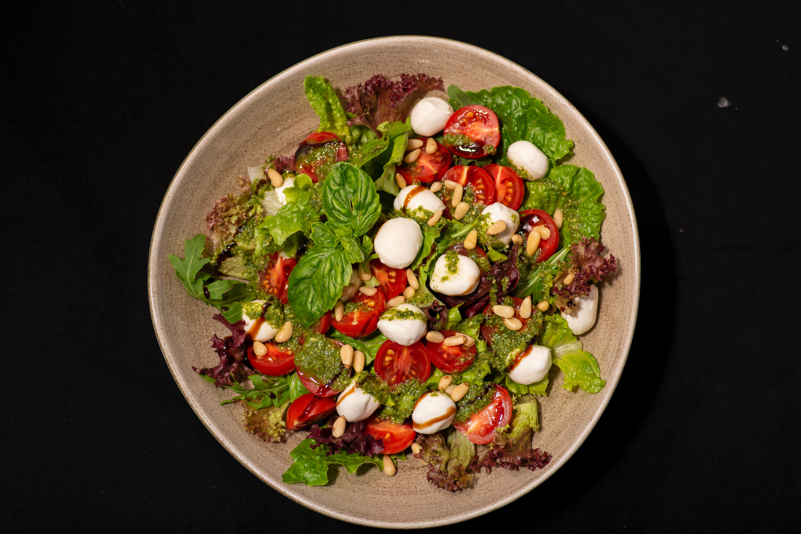

Nuestro menú Completo

Platillo de alambre con queso
Delicioso salteado platillo de carne de res jugosa y dorada, acompañado de una colorida mezcla de pimientos morron (rojo, verde y amarillo) cebollaa caramelizada y trozos de tocino crujiente. Todo ello bañado con queso fundido, que se derrite perfectamente sobre los ingredientes, aportando una textura cremosa y un sabor irresistible. Perfecto para acompartir en familia o con amigos.

Sopes
Estos son una delicia tradicional elaborada con una base gruesa de masa de maíz, parecida a una tortilla pero con los bordes pellizcados hacia arriba para formar un pequeño borde que retiene los ingredientes. La masa se cuese en un comal y luego se frie ligeramente para obtener una textura dorada y crujiente por fuera, pero suave por dentro. ¡A tu gusto!

Sopa de verduras
Esta sopa combina una deliciosa mezcla de zanahorias, papas, chayote, elote, calabacitas, ejotes, chicharos y jitomate, cocinados lentamente en un caldo ligero pero lleno de sabor. Es la opcion perfecta si buscas una comida saludable, ligera y nutritiva, ideal para abrir el apetito o disfrutar como platillo fuerte.

Burrito
Cada burrito es una explocion de sabor envuelta en una tortilla suave y calientita. Nos especializamos en crear burritos generosos, elavorados con ingredientes frescos, carnes jugosas, salsas caseras y ese toque especial que solo la autentica cocina mexicana puede ofrecer

Tortitas de papa
Crujientes por fuera y suaves por dentro, nuentras tortitas de papa estan hechas con papas frescas, ligeramente sazonadas y mezcladas con queso para un sabor irresistible. Doradas a la perfeccion se sirven acompañadas de una salsa roja casera y arroz o ensalada fresca. Una opcion vegetariana, deliciosa y tradicional que te hara sentir como en casa.

Pechugas de pollo rellenas
Jugosas pechugas de pollo cuidadosamente rellenas con una mezcla de queso crema, espinacas frescas y tocino crujiente, selladas a la perfección y cocinadas a la parrilla para resaltar todo su sabor. Acompañadas de una delicada salsa de vino blanco con un toque de ajo y finas hierbas, que complementa a la perfección la suavidad del relleno.

Pozole Verde
Nuestro pozole se prepara cuidadosamente con carne de cerdo suave y jugosa (opcionalmente con pollo), acompañado de maíz cacahuazintle, cocido hasta que revienta y adquiere una textura perfecta. se sirve con una variedad de acompañamientos para personalizarlo a tu gusto: rabanós, lechugas, cebolla, óregano, chile piquin, aguacate, limón, y tostadas crujientes.

Albóndigas
Disfruta de nuestras albóndigas clasicas en caldillo de jitomate acompañadas de arroz y tortillas hechas a mano, o venturate con nuestras creaciones especiales: albondigas rellenas de queso, con chipotle, en salsa verde o incluso en versiones vegetarianas. Cada platillo esta pensado para ofrecerte una experiencia reconfortante, sabrosa y autenticamente mexicana.

Totopos con queso fundido
Una entrada irresistible que combina lo mejor de la cocina mexicana: crujientes totopos de maíz recien horneados acompañados de un generoso baño de queso fundido, suaave y cremoso, derretido al punto perfecto. Servidos calientes, directamente de la cocina, nuestros totopos con queso son el inicio ideal para compartir en la mesa o disfrutar solo.

Espagueti con albóndigas
Nuestra especialidad combina perfectamente una pasta al dente bañada en una rica salsa de jitomate sazonada con finas hierbas, acompañada de jugosas albóndigas hechas a mano con carne de primera calidad y un toque de queso parmesano. Todo esto servido en un ambiente cálido, ideal para disfrutar en familia, con amigos o en una cita especial.

Enchiladas Suizas
Nuestro menú gira en torno a esta delicia gastronómica, preparada con tortillas suaves rellenas de pollo jugoso, bañadas en una cremosa salsa verde con queso fundido, y gratinadas al punto perfecto. En un ambiente acogedor y familiar, ofrecemos a nuestros comensales una experiencia única donde el sabor casero se combina con la calidad de ingredientes frescos y una presentación impecable.

Pollo frito en rodajas
jugosas rodajas de pechuga de pollo empanizadas y fritas a la perfección, con un exterior dorado, crujiente y lleno de sabor, y un interior tierno que se deshace en tu boca.Cada porción es preparada al momento, usando ingredientes frescos, especias caseras y una receta exclusiva que garantiza el equilibrio perfecto entre textura y sazón. Acompañamos

Lentejas
En nuestro restaurante, las lentejas no son solo un plato: son una tradición, un abrazo cálido en forma de comida. Elaboradas con ingredientes frescos, especias seleccionadas y recetas que han pasado de generación en generación, nuestras lentejas combinan lo mejor de la cocina casera con un toque de creatividad. Ya sea que prefieras la versión clásica con chorizo, una opción vegana llena de sabor o una presentación más contemporánea, en nuestro menú siempre encontrarás una cucharada de cariño en cada plato.

Chilaquiles
Crujientes, picantes, cremosos o con el toque exacto de sabor casero que despierta la nostalgia, aquí rendimos homenaje a este clásico de la cocina mexicana. Desde los tradicionales chilaquiles verdes o rojos con pollo, hasta creaciones modernas con birria, camarones o ingredientes veganos, cada plato está preparado al momento con tortillas recién fritas, salsas hechas en casa y ese sabor que solo se logra con pasión y sazón mexicana.

Torta cubana
¡Aquí la estrella es la torta cubana! Un verdadero festín entre pan, cargado de sabor, tradición y actitud. En nuestro restaurante celebramos el arte del antojo con tortas cubanas que combinan lo mejor de la cocina callejera mexicana: jamón, salchicha, milanesa, queso, huevo, aguacate y mucho más… todo bien servido, bien preparado y con el tamaño que impone respeto. Cada torta se arma al momento, con ingredientes frescos, pan suave por dentro y doradito por fuera, y ese toque especial que solo la auténtica torta cubana sabe dar.

Carne con verduras
Este platillo es un exquisito y colorido arroz con cerdo al estilo árabe. Esta servido sobre una base de arroz aromatico,cocido con especias como canela que le dan un sabor profundo y calido. Encima se encuentra una generosa porcion de carne de cerdo asada, con una textura jugosa y ligeramente dorada. Esta combinación de ingredientes crea una experiencia rica en texturas y sabores, ideal para una ocasion especial o un banquete tradicional.

Carne ahumada
Este platillo es una deliciosa y colorida combinacion de sabores tipicos de la cocina coreana, Esta compuesto por una generosa porcion de carne ahumada, tierna y bien condimentada, decorada con aros de cebolla morada que aportan un toque fresco y crujiente. En conjunto, este platillo es una fusion vibrante de sazón, tradición y presentación cuidada.

Estofado con arroz puro
Es una propuesta culinaria reconfortante y llena de sabor que combina la suavidad del arroz blanco puro al vapor con un guiso robusto de carne. La carne, cocinada lentamente, se fuciona con una mezcla de vegetales salteados como zanahorias, pimientos y cebolla morada, creando una salsa espesa y aromatica que resalta las notas dulces y saladas de la preparación.

Pollo con verduras
Este delicioso platillo de pollo viene acompañado con verduras cocidas al vapor, el pollo es cocido a fuego bajo por nuestros chefs, la verdura viene con un sabor unico para la familia o amigos, Lleva comunmente papa, calabazita, chayotes, y lo principal que es el pollo hervido y previamente guisado.

Ensalada gourmet
Nuestra ensalada gourmet viene acompañada con unos ricos trocitos de carne al vapor claramente saludables, para un mejor sabor nosotros nos especificamos en los gustos de ustedes, y algo saludable para su salud, con una rica fuente de proteina, especial para todos y todas las personas.

Champiñones con espagueti
Para algo delicioso y nuevo, les traemos este platillo de la cocina coreana, Esta elaborado con un rico espagueti que originalmente es de italia pero nuestros chefs lo producen aqui en corea, los champiñones son traidos de Alemania, y cocidos desde nuestra cocina hasta su paladar.